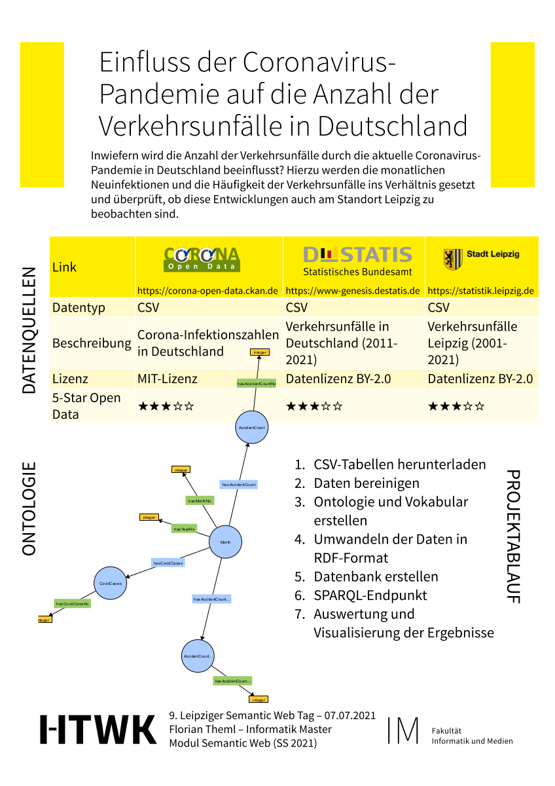

Florian Theml
Inwiefern wird die Anzahl der Verkehrsunfälle durch die aktuelle Coronavirus-Pandemie in Deutschland beeinflusst? Hierzu werden die monatlichen Neuinfektionen und die Häufigkeit der Verkehrsunfälle ins Verhältnis gesetzt und überprüft, ob diese Entwicklungen auch am Standort Leipzig zu beobachten sind.
